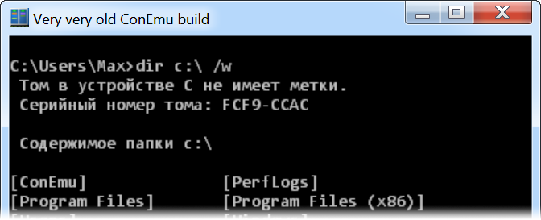
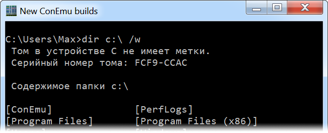

There are two ways how high-dpi support may work in Windows.
There are three style of DPI support in modern Windows versions.
These old applications do not know anything about monitor dpi and how to deal with high resolution.
Windows tries to make them as accessible as possible so their windows are shown larger than their ‘actual’ sizes so they fit your screen more properly.
On the other hand that is done by simple upscaling so their client contents as bitmap which causes blurred image.

